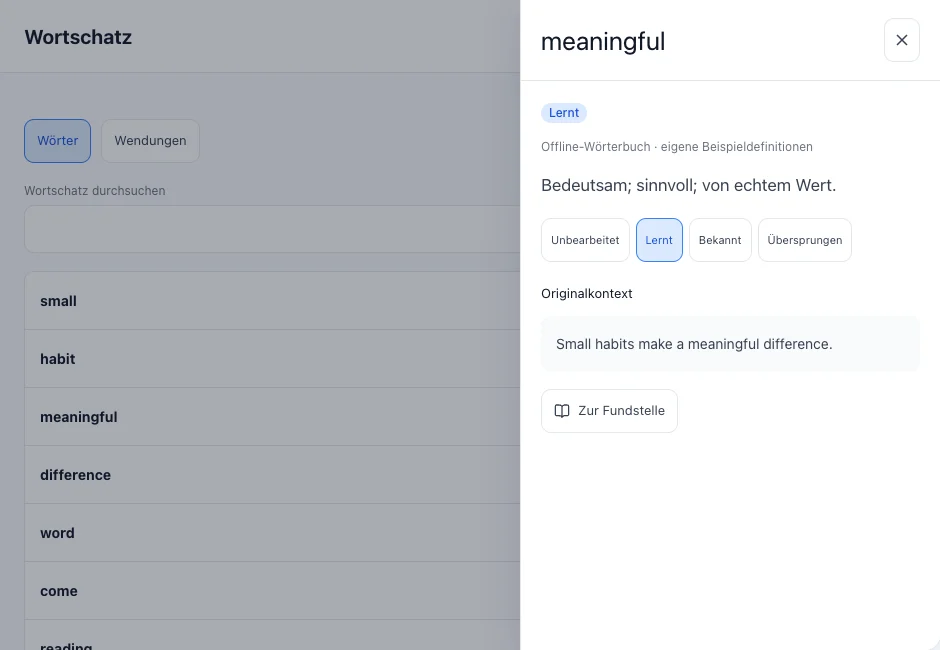
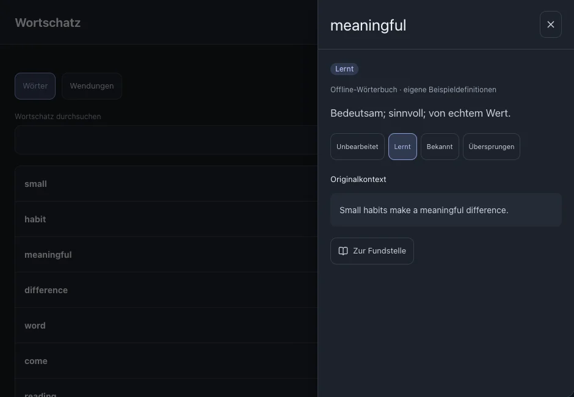

Wörter und Wendungen
Verwalte Wörter und Wendungen aus deinen Untertiteln. Über die Quelle kommst du zum Originalsatz zurück.
Auf dieser Seite
Einen Eintrag finden
- Öffne den Wortschatz und wähle Wörter oder Wendungen.
- Suche einen Eintrag oder filtere nach Lernstatus. Prüfe bei fehlenden Einträgen auch die Lernsprache.



Einen Status ändern
- Öffne einen Eintrag und wähle den passenden Status. Nutze die Auswahlwerkzeuge, um mehrere Einträge zu ändern.
- Wörter in Bearbeitung gehören zum Lernbestand; der Zeitplan bestimmt ihre Fälligkeit.
Siehe auchWiederholen
Zum Originalsatz zurückkehren
- Öffne die Quellen oder Fundstellen des Eintrags.
- Wähle Datei und Satz, um an dieser Stelle weiterzulesen.